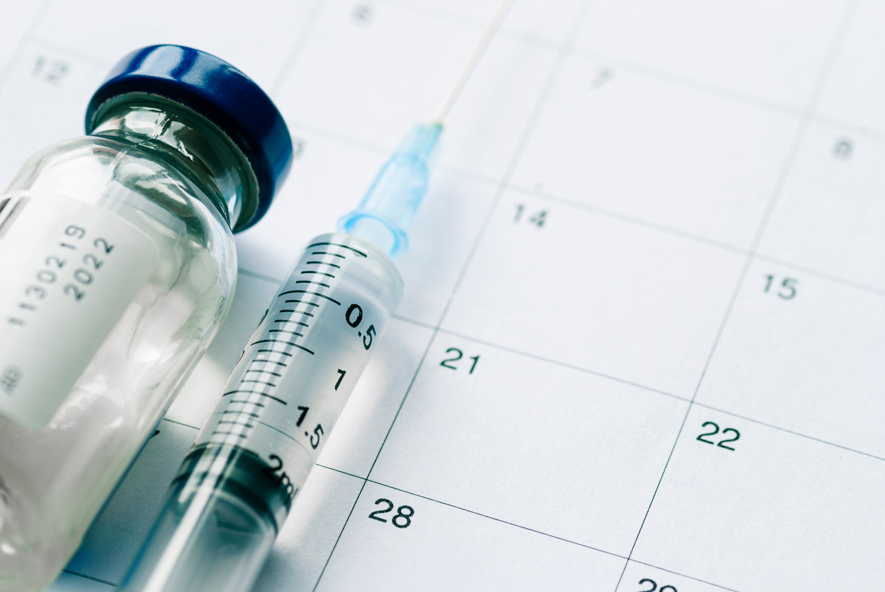

What is Substance Abuse?
Substance abuse refers to excessive use of a drug in a way that is detrimental to self, society, or both. This definition includes both physical dependence and psychologic dependence.
Many patients who have significant substance abuse problems will report to you that they have no problems because they themselves are unaware that they are drug dependent.
